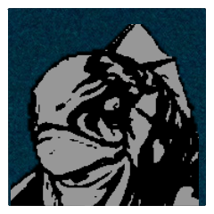
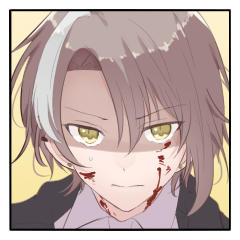

聖堂の鐘 ８日目
GM
[ここまでの聖堂の鐘]
- 親友に忍道フラグ立てられた人
- 輝く御斎魂
- 絶対防御(切実)
GM
大事なのを忘れてた。
- 「おこります(範囲攻撃)」「怒ります(おこ)」
GM
何ラウンド目かわすれましたか極地にはしないのでいいやってかおをしています。範囲攻撃への応対の続きから。よろしくお願いします。
GM
絶対防御の演出だけ入れば、生命力の処理とかはされてるし逆凪もいないのでそのまま次となります というわけで宿題は終わってますか?
カイジ
■奥義
《護法『火煙陣』》
指定特技 ：罠術
エフェクト：絶対防御／なし／なし
効果・演出：水中に漂う金属片、火薬、煙。張り巡らされたその残滓は、退魔の力を帯びている。
カイジ
古龍の一薙ぎ。すべてを吞み込もうとする激浪。
「――ックソがよ！！」
カイジ
放られた手榴弾は特殊な混合爆薬により水中でも猛度を揮う。
と同時に、展開されたのは不可視の防壁だ。
しかし、範囲が広い。広すぎる。守れるのは自分一人きり。
ユヅキ
■奥義
《結界『心結び』》
指定特技 ：意気
エフェクト：絶対防御／くらまし／防御低下
効果・演出：一時的に増幅させた異能の力を、少年が大切に想う他者に受け渡し、不可視のシールドとする。
ユヅキ
カイジが視線を向けた先、ただ歯を食いしばっている、その、少年は。
ユヅキ
頭が回るわけでも、力が強いわけでも、技術に優れているわけでもない。
ユヅキ
正直忍術のセンスはあんまりないし、戦いだって得意じゃない。
ユヅキ
それでもただひとつ、少年に何か残されているとするのなら。
ユヅキ
どれほどの絶望を前にしても、折られることのない、折ることのできない、その心のみだ。
ユヅキ
ただその心だけが、忍者としては端くれの存在に過ぎない少年に、一時であれど力を与えてくれる。
ユヅキ
誰かを、あなたを、君を守りたいという、その心だけが、少年の力だ。
ソーニャ
強大なるその妖魔を打ち倒すためには、間違いなくその協力が要る。
ソーニャ
だがこの若き狐はその一撃を受ける術を持たない。
ソーニャ
がら空きの身体にその一撃を受ける、寸前――
ユヅキ
名を呼び手を伸ばしたその先、あなたの体に宿るは暖かな力。
ユヅキ
一時であれその身を覆う太陽は、どんな一撃をも通さない。
ソーニャ
昏色の濁流の中、その温もりは奇妙に映え立った。
ソーニャ
――誰のものか。などということは、考えるまでもなく結論がつく。
この状況で自分を守る力のある、自分のよく知らない方の相手。
カイジ
古龍は尚も荒ぶる。明らかな窮地は変わらない。
しかし、その陽光に。
男はニヤリと口角を吊り上げた。
カイジ
陽の光を受けたように、ギラ、と好戦的に目を輝かせる。
伴 護伴
これだけ大味な攻撃であるにも関わらず、"眷属"達は小揺るぎもしていないという事実は、力の差を思い知る薬としてはちょっと効き過ぎていると思う。だが、そういう時こそ前を見ているべきだというのが、会長の言であり、学園の戦術の教えである。
伴 護伴
派手な攻撃の後に、小さな手勢を差し込む。「ユヅキ、気を付けろ！」

水怪(1)
てえわけでユヅキに接近戦攻撃です。くたばれ小僧。
水怪(1)
2D6>=5 （判定：水術） (2D6>=5) ＞ 5[1,4] ＞ 5 ＞ 成功
水怪(1)
いちたりた。水中の-2をつけてがんばってね。
ユヅキ
ぐえ、回避します 水術で振りますね！-2あやうくわすれてた……
ユヅキ
2D6-2>=6 （判定：針術） (2D6-2>=6) ＞ 5[2,3]-2 ＞ 3 ＞ 失敗
[ ユヅキ ] 器術 : 1 → 0
水怪(2)
プロット3です。先がいいですか? 後がいいですか?
水怪(2)
無慈悲にいじめるならヴァレリアかユヅキへの追撃なんですけど、やさしいのでソーニャにします。接近戦攻撃。
水怪(2)
2d6-2+1>=5 ていやー (2D6-2+1>=5) ＞ 10[4,6]-2+1 ＞ 9 ＞ 成功
ソーニャ
2D6-2>=7 （判定：手裏剣術） (2D6-2>=7) ＞ 3[1,2]-2 ＞ 1 ＞ 失敗
[ ソーニャ ] 器術 : 1 → 0
ユヅキ
古龍に文曲！で、攻撃するときもまいなす補正ありましたっけ
ユヅキ
2D6>=5 （判定：用兵術） (2D6>=5) ＞ 6[3,3] ＞ 6 ＞ 成功
古龍
2d6+2>=7 言霊術=> 回避:用兵術 (2D6+2>=7) ＞ 8[2,6]+2 ＞ 10 ＞ 成功
古龍
そこで悠々と生き延びるから神って呼ばれるんですよ。
古龍
2d6+2>=7 言霊術=> 回避:用兵術 (2D6+2>=7) ＞ 9[4,5]+2 ＞ 11 ＞ 成功
古龍
プロット2組は1d100振って 高い順から。
Valeria Anselmi
1d100 (1D100) ＞ 14
伴 護伴
ソーニャ=>ナバリ=>ごはん=>ヴァレリア=>カイジ。
ソーニャ
2D6>=5 （判定：異形化） (2D6>=5) ＞ 10[4,6] ＞ 10 ＞ 成功
ソーニャ
はい、回避は霊装から呪術でお願いします。
古龍
2D6+2>=8 （判定：伝達術） (2D6+2>=8) ＞ 2[1,1]+2 ＞ 4 ＞ ファンブル
古龍
さっきの出目と入れ替われよって言っていいよ。
ソーニャ
でもいついかなるときもファンブルは嬉しいよ。
[ 古龍 ] 生命力 : 15 → 13
ソーニャ
じゃあリソースを出し惜しみしたくないので回想シーンを切って１点上乗せしますね。
ソーニャ
荒れ狂う水流に頬を叩かれ、獣の耳をそよがせる。
ソーニャ
激流を裂いた腕には、いまだわずかな熱が残る。
ソーニャ
【秘密：ソーニャ】
あなたとPC4は昔馴染みの仲で、今までで数回、彼（彼女）に勝っている。
しかし、PC4は諦めるところを知らない。今度も勝って、PC4に身の程を教えてやろう。
あなたの【本当の使命】は、「PC4に自分の実力を認めさせる」である。
ソーニャ
もとより自分がこのヴェネツィアを訪れたのは、彼との――まあやや一方的な――因縁が全てである。
ソーニャ
いつも通り彼で遊んで、彼を翻弄して、適度に勝ち誇って十分に楽しんだら、
ソーニャ
で、構わない。
つまらない流派のお偉方の命令であるところの『蒼海の珠』も、自分はばっちり確保済。
ソーニャ
ここで戦わなければならない理由なんてものは、本来どこにもありはしない。
ソーニャ
「多少なりとも埋め合わせないと、格好はつかないよなあ？」
ソーニャ
描かれた爪の軌道で古龍の逆鱗を重ねて抉り抜きながら、それを煽る。
ソーニャ
「さてさてそんなに急いでどうしたよ、古き偉大なる古龍の君！」
ソーニャ
「若輩者としては横綱勝負を期待したのだけれど――」
ソーニャ
「なかなかどうして、新たな流れが恐ろしくなったかな？」
ソーニャ
劣勢の中に手応えを見出しながら、古き龍を嗤った。
ソーニャ
＊回想シーン効果にて接近戦ダメージを１点上乗せします。
[ 古龍 ] 生命力 : 13 → 12
古龍
3点飛んでくるようになってたのは接近戦(妖魔化効果)だよな、はい、了解です。
ソーニャ
そうですね。今回は血旋渦なので血旋渦１＋獣化１＋回想シーン１の３点ダメージです。
伴 護伴
「確かに、逃げて強引に流れを変えようとしたと見ることはできますね」
伴 護伴
残念なのは……完全に間合いを外された自分では手出しができないということなのだが。パスです。
伴 護伴
ナバリとばしちゃった。ごはんくんとしてはかわらんけど。
ソーニャ
「そもあんだけ強いのに逃げるとかナシでしょ、残念だな～」
ソーニャ
「まあでも、ヨコヅナって言葉は通じないか～」
ナバリ
周りの人間がそうやって手を尽くし、どうにか"すべて"を救おうとしていることなど露知らず。
ナバリ
ただ、古龍に不敬を働いてそうな言を吐いている者に敵意が向く。ごはんくんに接近戦攻撃だ！
伴 護伴
もっと不敬なのいますよとは言わないでおこう かしこいので
判定どうぞ。
ナバリ
わかる。多分一番近かったんじゃない（てきとう）
ナバリ
2D6>=5 （判定：隠形術） (2D6>=5) ＞ 9[3,6] ＞ 9 ＞ 成功
伴 護伴
2D6-2>=9 （判定：意気）遠いですのう (2D6-2>=9) ＞ 5[1,4]-2 ＞ 3 ＞ 失敗
[ 伴 護伴 ] 戦術 : 1 → 0
ナバリ
異形と化した姿でも、元の忍術を忘れるわけではない。あなたの目の前に高速で迫ったかと思えば、姿を消して護判の背後から一撃を叩き込んだ。
伴 護伴
「……大物に気を取られてるのは自分の方だったか、いやまあ」ぐるん、と水中一回転。
「あんまり君を見ててユヅキに怒られるのもなあ」すっとぼけ。
ユヅキ
すっとぼけ気づかず普通に大丈夫かなって心配してる！
伴 護伴
パスって言ったけど水怪2に八つ当たりします。人脈指定の執行で。
伴 護伴
2d6>=5 (2D6>=5) ＞ 11[5,6] ＞ 11 ＞ 成功
水怪(2)
2d6+1>=12 (2D6+1>=12) ＞ 11[5,6]+1 ＞ 12 ＞ 成功
水怪(2)
2D6+1>=5 （判定：地の利） (2D6+1>=5) ＞ 8[4,4]+1 ＞ 9 ＞ 成功
[ 伴 護伴 ] 謀術 : 1 → 0
Valeria Anselmi
そういう感じで自分で悩まなくていい状況を作って殴るマッチポンプをします。水怪2に接近戦攻撃。
Valeria Anselmi
2D6>=5 （判定：仕込み） (2D6>=5) ＞ 5[1,4] ＞ 5 ＞ 成功
Valeria Anselmi
ちょっとびびったけど足りてればセーフ。
水怪(2)
2D6+1>=7 （判定：水術） (2D6+1>=7) ＞ 8[3,5]+1 ＞ 9 ＞ 成功
GM
淡々と進めてるように見えるけどGMも反応に困っています。カイジの手番。
カイジ
2D6>=5 （判定：骨法術） (2D6>=5) ＞ 8[3,5] ＞ 8 ＞ 成功
カイジ
2D6>=5 （判定：見敵術） (2D6>=5) ＞ 6[2,4] ＞ 6 ＞ 成功
カイジ
見敵術で、狭霧で-1つけつつお願いします！
水怪(2)
2D6+1-1>=9 （判定：地の利） (2D6+1-1>=9) ＞ 10[4,6]+1-1 ＞ 10 ＞ 成功
Valeria Anselmi
「いや！もう！なんなのよ！？」
伴 護伴
「最高に計算外だな、って台詞を下級妖魔相手に使うことになるとは思いませんでした」
ソーニャ
なんだかんだラウンド４か、プロットはOKです。
GM
まあ40分ぐらいまで休憩にしよう
悩む人はゆっくり悩んでどうぞ
カイジ
あ、プロットはOKなんで開けてもらっても大丈夫です！
ソーニャ
一気に開けた方がいいから揃ってから開けようぜ。
ソーニャ
古龍を減らそうとがんばってるんだけどなあ。
ソーニャ
うち６を減らしてる。頑張ってると思いませんか？
ソーニャ
まあ絶対防御ないからダメージディーラーとして働くしかないのがありますが……
GM
こういうシナリオでなかなかGMが嫌いなのは判定妨害ですが、持つ人自体が少ない。
GM
絶対防御はまあ誰か持ってくるわって思ってるから鬱陶しいけど嫌うでもない
GM
じゃ、地獄の蓋をあけましょうか。プロットオープンで。
[ ナバリ ] がダイスシンボルを公開。出目は 3 です。
[ 伴 護伴 ] がダイスシンボルを公開。出目は 2 です。
[ カイジ ] がダイスシンボルを公開。出目は 3 です。
[ 水怪(1) ] がダイスシンボルを公開。出目は 6 です。
[ 水怪(2) ] がダイスシンボルを公開。出目は 6 です。
[ Valeria Anselmi ] がダイスシンボルを公開。出目は 3 です。
[ 古龍 ] がダイスシンボルを公開。出目は 3 です。
[ ユヅキ ] がダイスシンボルを公開。出目は 3 です。
[ ソーニャ ] がダイスシンボルを公開。出目は 2 です。
水怪(1)
たいへん残念ですがユヅキとヴァレリアさんが当選しました。
水怪(1)
プロット2まで猟犬で移動してユヅキに接近戦攻撃。
水怪(1)
2d6+1>=5 水術 (2D6+1>=5) ＞ 7[2,5]+1 ＞ 8 ＞ 成功
水怪(2)
並行して、プロット2まで猟犬で移動してヴァレリアに接近戦攻撃。
水怪(2)
2d6+1>=5 (2D6+1>=5) ＞ 3[1,2]+1 ＞ 4 ＞ 失敗
ユヅキ
2D6-2>=10 （判定：潜伏術） (2D6-2>=10) ＞ 12[6,6]-2 ＞ 10 ＞ スペシャル(【生命力】1点か変調一つを回復)
[ ユヅキ ] 器術 : 0 → 1
Valeria Anselmi
1d100 (1D100) ＞ 78
Valeria Anselmi
よーし指定特技が隣でもめげずに古龍を殴る なぜなら返し技がないから
Valeria Anselmi
2D6>=5 （判定：仕込み） (2D6>=5) ＞ 10[5,5] ＞ 10 ＞ 成功
古龍
2D6+2>=6 （判定：身体操術） (2D6+2>=6) ＞ 11[5,6]+2 ＞ 13 ＞ 成功
古龍
格が違うんで舞台裏の掃除でもしといてもらえる?
古龍
GMとしては出目の振れが極端寄りでちょっと反応に困る。ユヅキの手番です。
ユヅキ
2D6>=5 （判定：用兵術） (2D6>=5) ＞ 10[5,5] ＞ 10 ＞ 成功
古龍
2d6+2>=7 言霊術=> 回避:用兵術 (2D6+2>=7) ＞ 5[1,4]+2 ＞ 7 ＞ 成功
カイジ
2D6>=5 （判定：骨法術） (2D6>=5) ＞ 7[1,6] ＞ 7 ＞ 成功
カイジ
2D6>=5 （判定：見敵術） (2D6>=5) ＞ 10[4,6] ＞ 10 ＞ 成功
古龍
2D6+2-1>=7 （判定：伝達術） (2D6+2-1>=7) ＞ 7[1,6]+2-1 ＞ 8 ＞ 成功
古龍
とはいえ、鬼影と非常識のせいでめちゃくちゃ範囲忍法しにくいんですよ。
ナバリ
ハッハッハ 居るだけで意味あるビルドにしといてよかった（？
古龍
奥義。先に出しますとユヅキにクリティカルヒット。
古龍
《水呪》
指定特技 ：毒術
エフェクト：クリティカルヒット／滅び／射程低下
呪われた身体から溢れ出す毒で"敵"の五感を包む。ここは既に陽の届く世界ではないのだ。
[ ユヅキ ] 器術 : 1 → 0
[ ユヅキ ] 体術 : 1 → 0
[ ユヅキ ] 忍術 : 1 → 0
[ ユヅキ ] 妖術 : 1 → 0

ユヅキ
放たれた毒で体が蝕まれる。それでも歯を食いしばる。視線は逸らさない。戦いはまだ続いている。
ナバリ
まあ……我関せずで眼の前の敵をボコボコにするのみですね……ごはんくんに接近戦攻撃をかまします。
ナバリ
2D6>=5 （判定：隠形術） (2D6>=5) ＞ 7[3,4] ＞ 7 ＞ 成功
伴 護伴
2D6-2>=10 （判定：骨法術）でもわりと無理ゲーできびしい (2D6-2>=10) ＞ 9[3,6]-2 ＞ 7 ＞ 失敗
ナバリ
こいつ戦術二回潰そうとするの殺意しかないんか。
伴 護伴
なんでそんなに戦術をすりつぶそうとするの えーんえーん
[ 伴 護伴 ] 忍術 : 1 → 0
伴 護伴
プロット2、一応1d100高かった方から。
ソーニャ
■奥義
《Μπλε βροντή》
指定特技 ：瞳術
エフェクト：クリティカルヒット/断ち/回数制限
ソーニャ
ごく近くで毒液に包み込まれるユヅキを見る。
ソーニャ
彼は先程の水流を自力で凌いでいた。
自分を守るためのあの技を手の内に隠しておけば、今の一撃をもろに食らうことも避けられただろう。
ソーニャ
であればこそ、これは改めて、自分の役目。
ソーニャ
この海より蒼く、この濁流より清冽なる眩しい光！
ソーニャ
かつてテウメッサの狐へと落とされ、"何ものにも決して捕まらない"運命をそのままに固定した雷轟。
ソーニャ
蒼い稲妻が古龍を焼き、鱗を抉り、水流の中に焼き焦がす。
[ 古龍 ] 生命力 : 12 → 7
ユヅキ
「ん、……じゅーぶんだよ、ソーニャ、ありがと」
ユヅキ
笑う余裕もないが、それでもまた、親指を立てた。
古龍
身を焦がした一瞬、己の支配力が揺らぎ、下級妖魔どもに動揺が走ったのを感じる。衝撃の範囲は大海からすれば極一部で、轟音が静まると共に配下どもの精神を引き締め直す。
古龍
理解に苦しむ。此奴とて、半歩もズレれば"こちら側"であろうに。
ソーニャ
「古い因習とか怨念とか、そういうのイマイチ惹かれないんだよねえ！」
伴 護伴
「ま、そうでなくても好かれて集まった軍団には見えませんが」ヘイトの肝を見抜いたので稼ぎに入る男。
伴 護伴
接近戦攻撃をするしかねえので古龍に接近戦攻撃をします
伴 護伴
2D6>=5 （判定：手裏剣術） (2D6>=5) ＞ 2[1,1] ＞ 2 ＞ ファンブル
伴 護伴
言った瞬間に槍でも投げつけられたかね......別に被害はないので通しです
古龍
まあ後1-2ラウンドで出口は見えてるでしょう。
古龍
そんぐらいでどうにかしてなければお前らは全員海の底ですの意でもあります